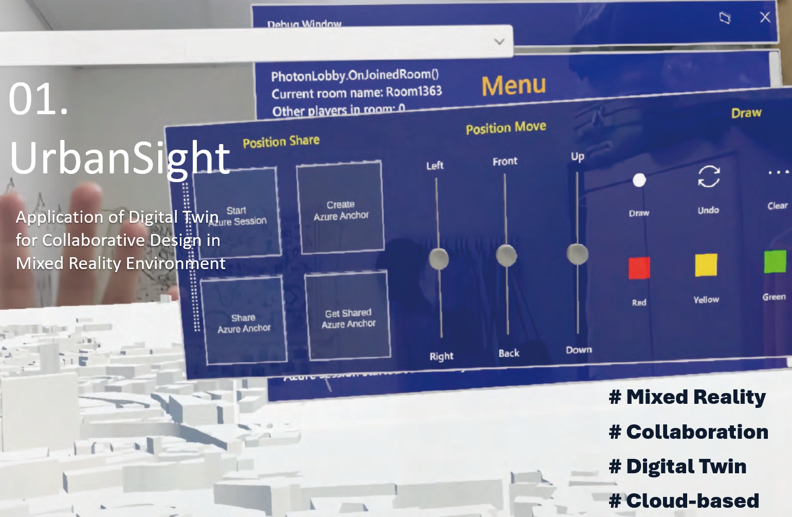

UrbanSight is a collaborative mixed-reality platform that connects a live digital twin with physical architectural models through HoloLens 2. Multiple users share a synchronized holographic workspace, interacting with real-time BIM data, geospatial overlays, and 3D urban models co-located in the same physical space.
The system was awarded the Young CAADRIA Award 2024, recognizing its contribution to integrating digital twin technology with human-centered mixed-reality interfaces for architectural design review.
@inproceedings{hsieh2024urbansight,
title={URBANSIGHT: Application of Digital Twin to Augmented Reality},
author={Hsieh, Tzu Hsin and Jeng, Tay Sheng},
booktitle={29th International Conference on Computer-Aided Architectural Design Research in Asia, CAADRIA 2024},
pages={271--280},
year={2024},
organization={The Association for Computer-Aided Architectural Design Research in Asia}
}